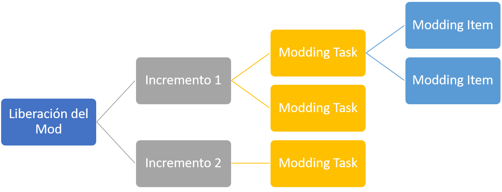

Moddear
El término "moddear" es usado dentro de Kross Modding Process, para representar la acción de desarrollar un conjunto
de modding task. Dentro del desarrollo de cada una de estas tareas se incluyen actividades de modificación de
texturas de los gráficos, cambios de los personajes y sus comportamientos, creación e inclusión de mapas, ampliación de
características del juego, entre otros cambios.
Esta es la tarea más importante del proceso, ya que en este punto se realizan cada uno de los cambios deseados en el
producto. En este punto se deben tener varias consideraciones:
-
La disciplina y el orden en esta tarea son fundamentales, ya que se trabaja con software funcionando. Cualquier
cambio realizado en este punto puede desencadenar excepciones en el sistema y errores, por lo tanto se debe estar
preparado para trabajar en ese entorno de ensayo y error.
-
Consecuente a lo anterior, es importante siempre realizar copias de seguridad, para volver a un punto seguro en
caso de error.
-
Registrar siempre los cambios que se realicen en el sistema con el fin de retomar de forma más sencilla las
actividades, cuando conllevan mucho tiempo en su realización.
-
Cada Mod es distinto, ya que cada software es diferente y las herramientas de modificación muy variables. Por lo
tanto la tarea de "Moddear" varía en cuanto al tipo de mod que se realice, al software que se
trabaja, a las herramientas de las cuales se dispone y del conocimiento del equipo de trabajo.
El resultado de esta tarea, es un Incremento, los cuales al sumarse forman las distintas liberaciones
del producto. Cada liberación se conforma de incrementos, los cuales son modding
tasks completadas de modding ítems definidos en la etapa de Pre-modding.

|